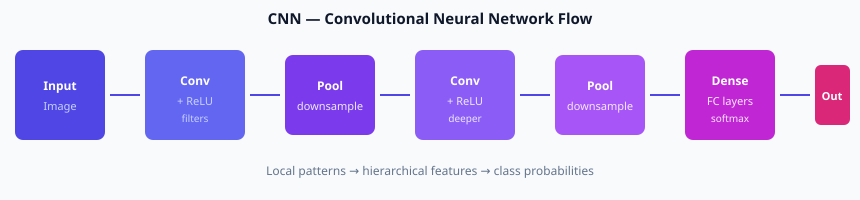

07
Module 7 — Transfer Learning & Practical DL
Bridge module · Fine-tuning pre-trained models · Real project patterns
Note on numbering
The official NIAI outline jumps from Module 6 to Module 8. This Module 7 consolidates the curriculum tasks “fine-tune pre-trained models · transfer learning · distributed training” into a practical bridge before MLOps.
Why not train every network from scratch?
- Modern CNNs and Transformers need millions of labelled examples and days of GPU time.
- Features learned on ImageNet or large text corpora (edges, textures, grammar, world knowledge) transfer to new tasks.
- Transfer learning = start from a strong pre-trained model and adapt it to your smaller dataset.
7.1
How transfer learning works
Typical image workflow
- Load a pre-trained CNN (ResNet, EfficientNet, …) trained on ImageNet.
- Freeze early layers (they detect generic edges and textures).
- Replace the final classification head with a new head matching your number of classes.
- Train only the new head (or unfreeze top layers later) on your data with a smaller learning rate.
Typical NLP workflow
- Load a pre-trained Transformer (BERT, DistilBERT, …).
- Add a classification or token-classification head.
- Fine-tune on your labelled sentences with a low learning rate (e.g. 2e-5).
Conceptual numbers — why fine-tuning is cheaper
Training a large CNN from scratch on ImageNet: ~1–2 weeks on multiple GPUs, millions of images.
Fine-tuning the same backbone on 2,000 medical images: hours on a single GPU, often better accuracy than training from random weights on the same small set.
Reuse expensive general features; only adapt the last layers to your domain.

In transfer learning we often freeze early Conv blocks and train the later / head layers
7.2
Practical patterns
1. Feature extraction vs fine-tuning
- Feature extraction — freeze the whole backbone, train only a linear classifier on top. Fastest, least risk of overfitting.
- Fine-tuning — unfreeze some or all layers and continue training with a small LR. More flexible, needs more data and care.
2. Learning-rate tips
- New head: higher LR (e.g. 1e-3)
- Pre-trained layers: much lower LR (e.g. 1e-5) or differential LRs per layer block
- Warm-up then cosine decay often helps Transformers
3. Data augmentation (images)
Random flips, crops, colour jitter increase effective dataset size and reduce overfitting when you have few labelled images.
4. Where to run it on GCP
- Vertex AI Workbench notebook with a GPU for interactive experiments
- Vertex AI custom training job for longer runs
- Save checkpoints and the final model to Cloud Storage; register in Vertex Model Registry
7.3
Mini project checklist
Suggested exercise
- Pick a small image or text dataset (or a public Kaggle subset).
- Load a pre-trained model from TensorFlow Hub / Hugging Face / PyTorch Hub.
- Replace the head, freeze the backbone, train 5–10 epochs.
- Optionally unfreeze top layers and fine-tune with a lower LR.
- Report train vs validation metrics and a few qualitative examples.
When fine-tuning a pre-trained model you should usually:
Module 7 — Key takeaways
- Transfer learning reuses features learned on large datasets.
- Freeze early layers, adapt the head; fine-tune carefully with low LR.
- Works for both vision (CNNs) and language (Transformers).
- On GCP: Workbench + GPU or Vertex training jobs + Model Registry.